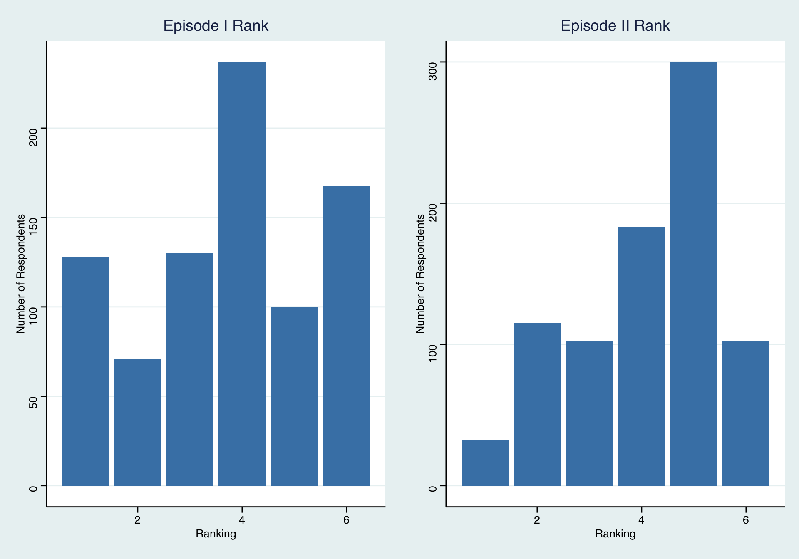
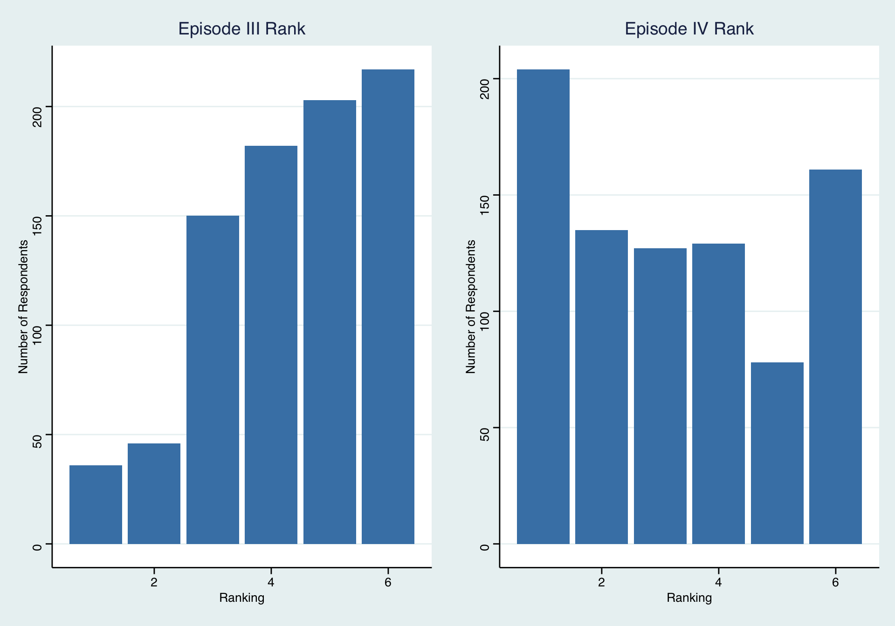
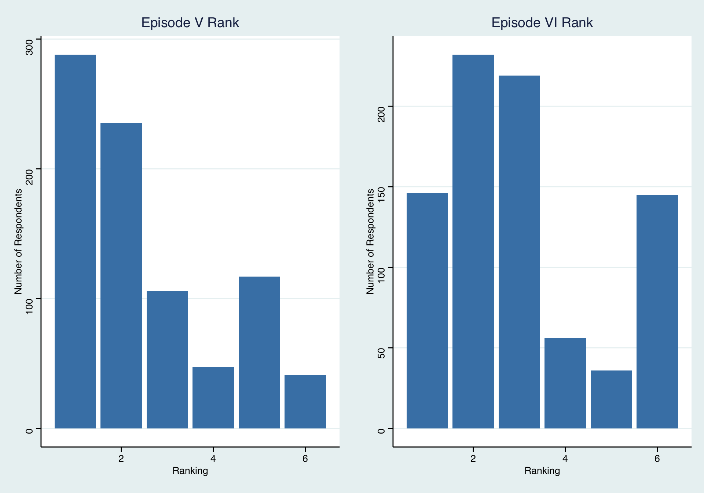
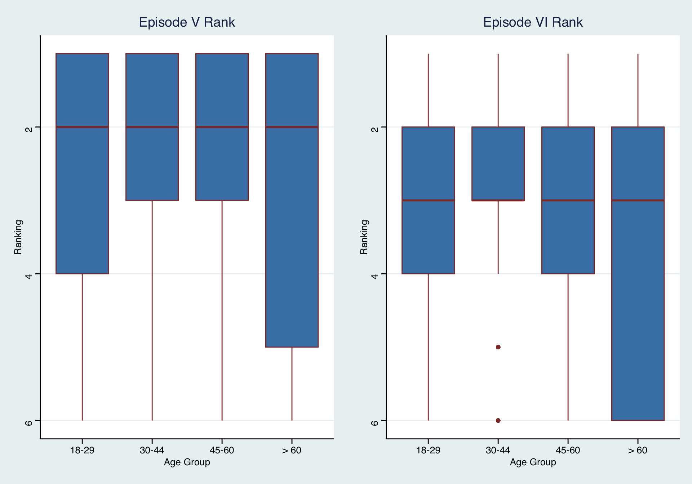

What Your Age Says About Your Favorite Star Wars Movie
Introduction
Do younger people prefer the Star Wars prequel movies more than the originals? In this study, I analyze the ages of respondents and which Star Wars movies they like the most. I hypothesize that if people are younger then they will prefer the prequel movies more than the originals, for they grew up as the prequel movies were being released. For this analysis, I use data collected by Walt Hickey from FiveThirtyEight. This is interesting to investigate because it could say more about the attachment or nostalgia people may have with the films that they grew up with.
Data Summary
The data source I am using for this analysis is from Walt Hickey of FiveThirtyEight. All of the data was collected in a survey of 1,186 respondents, and Hickey measured the ranking for each film, gender, age, income, education, and geographical location. For the purposes of this analysis, I will be using the ranking of the films and age variables. Additionally, my research design is cross-sectional, for I am reviewing the measures of the ages of respondents and their rankings of the films at the same point in time.
Specifically, the explanatory variable or independent variable of interest is the age group of the respondents in the survey. This is measured in four age groups: 18-29, 30-44, 45-60, and > 60. My outcome variable or dependent variable is how respondents ranked the 6 Star Wars movies. This is measured by rankings of 1 to 6, with 1 being their favorite film and 6 being their least favorite. If I observe that those in the younger age categories (18-29 and 30-44) ranked the prequel movies higher, this would support my hypothesis. However, if I observe the opposite or, for example, there is only strong support for the original movies among all age groups, this would be evidence against my hypothesis.
The following visualizations summarize the dependent variable, which is the rankings. Each graph shows the amount of responses for each ranking position for each movie: 1 is the best and 6 is the worst.
library(tidyverse)## ── Attaching core tidyverse packages ──────────────────────── tidyverse 2.0.0 ──
## ✔ dplyr 1.1.3 ✔ readr 2.1.4
## ✔ forcats 1.0.0 ✔ stringr 1.5.0
## ✔ ggplot2 3.4.3 ✔ tibble 3.2.1
## ✔ lubridate 1.9.2 ✔ tidyr 1.3.0
## ✔ purrr 1.0.2
## ── Conflicts ────────────────────────────────────────── tidyverse_conflicts() ──
## ✖ dplyr::filter() masks stats::filter()
## ✖ dplyr::lag() masks stats::lag()
## ℹ Use the conflicted package (<http://conflicted.r-lib.org/>) to force all conflicts to become errorslibrary(ggplot2)
library(ggpubr)
library(ggthemes)
load("StarWars.RData")
StarWars <- as_tibble(StarWars) |>
select(V1:V3, V10:V15, V34:V38) |>
rename(respondent_id = V1, seen_any_film = V2, fan = V3, ep1_rank = V10,
ep2_rank = V11, ep3_rank = V12, ep4_rank = V13, ep5_rank = V14,
ep6_rank = V15, gender = V34, age = V35, income = V36,
education = V37, location = V38) |>
slice(-1, -2) |>
mutate(ep1_rank = as.integer(ep1_rank),
ep2_rank = as.integer(ep2_rank),
ep3_rank = as.integer(ep3_rank),
ep4_rank = as.integer(ep4_rank),
ep5_rank = as.integer(ep5_rank),
ep6_rank = as.integer(ep6_rank)) |>
na.omit()
ep1_rank <- StarWars |>
count(ep1_rank) |>
ggplot(mapping = aes(x = ep1_rank, y = n)) +
geom_col(fill = "steelblue") +
labs(title = "Episode I Rank",
x = "Ranking",
y = "Number of Respondents") +
theme_stata()
ep2_rank <- StarWars |>
count(ep2_rank) |>
ggplot(mapping = aes(x = ep2_rank, y = n)) +
geom_col(fill = "steelblue") +
labs(title = "Episode II Rank",
x = "Ranking",
y = "Number of Respondents") +
theme_stata()
ep3_rank <- StarWars |>
count(ep3_rank) |>
ggplot(mapping = aes(x = ep3_rank, y = n)) +
geom_col(fill = "steelblue") +
labs(title = "Episode III Rank",
x = "Ranking",
y = "Number of Respondents") +
theme_stata()
ep4_rank <- StarWars |>
count(ep4_rank) |>
ggplot(mapping = aes(x = ep4_rank, y = n)) +
geom_col(fill = "steelblue") +
labs(title = "Episode IV Rank",
x = "Ranking",
y = "Number of Respondents") +
theme_stata()
ep5_rank <- StarWars |>
count(ep5_rank) |>
ggplot(mapping = aes(x = ep5_rank, y = n)) +
geom_col(fill = "steelblue") +
labs(title = "Episode V Rank",
x = "Ranking",
y = "Number of Respondents") +
theme_stata()
ep6_rank <- StarWars |>
count(ep6_rank) |>
ggplot(mapping = aes(x = ep6_rank, y = n)) +
geom_col(fill = "steelblue") +
labs(title = "Episode VI Rank",
x = "Ranking",
y = "Number of Respondents") +
theme_stata()
ggarrange(ep1_rank, ep2_rank, ep3_rank, ep4_rank,
ep5_rank, ep6_rank, ncol = 2, align = "v")
The Results
The following boxplots show the correlation between age and the ranking of the films. Following the boxplots, there is a table showing the regression model with each film’s ranking serving as the main coefficient of interest.
age_ep1_rank <- StarWars |>
filter(age == "18-29" | age == "30-44" | age == "45-60" | age == "> 60") |>
ggplot(mapping = aes(x = factor(age, level = c("18-29", "30-44", "45-60", "> 60")),
y = ep1_rank)) +
geom_boxplot(color = "indianred4", fill = "steelblue") +
labs(title = "Episode I Rank",
x = "Age Group",
y = "Ranking") +
scale_y_reverse() +
theme_stata()
age_ep2_rank <- StarWars |>
filter(age == "18-29" | age == "30-44" | age == "45-60" | age == "> 60") |>
ggplot(mapping = aes(x = factor(age, level = c("18-29", "30-44", "45-60", "> 60")),
y = ep2_rank)) +
geom_boxplot(color = "indianred4", fill = "steelblue") +
labs(title = "Episode II Rank",
x = "Age Group",
y = "Ranking") +
scale_y_reverse() +
theme_stata()
age_ep3_rank <- StarWars |>
filter(age == "18-29" | age == "30-44" | age == "45-60" | age == "> 60") |>
ggplot(mapping = aes(x = factor(age, level = c("18-29", "30-44", "45-60", "> 60")),
y = ep3_rank)) +
geom_boxplot(color = "indianred4", fill = "steelblue") +
labs(title = "Episode III Rank",
x = "Age Group",
y = "Ranking") +
scale_y_reverse() +
theme_stata()
age_ep4_rank <- StarWars |>
filter(age == "18-29" | age == "30-44" | age == "45-60" | age == "> 60") |>
ggplot(mapping = aes(x = factor(age, level = c("18-29", "30-44", "45-60", "> 60")),
y = ep4_rank)) +
geom_boxplot(color = "indianred4", fill = "steelblue") +
labs(title = "Episode IV Rank",
x = "Age Group",
y = "Ranking") +
scale_y_reverse() +
theme_stata()
age_ep5_rank <- StarWars |>
filter(age == "18-29" | age == "30-44" | age == "45-60" | age == "> 60") |>
ggplot(mapping = aes(x = factor(age, level = c("18-29", "30-44", "45-60", "> 60")),
y = ep5_rank)) +
geom_boxplot(color = "indianred4", fill = "steelblue") +
labs(title = "Episode V Rank",
x = "Age Group",
y = "Ranking") +
scale_y_reverse() +
theme_stata()
age_ep6_rank <- StarWars |>
filter(age == "18-29" | age == "30-44" | age == "45-60" | age == "> 60") |>
ggplot(mapping = aes(x = factor(age, level = c("18-29", "30-44", "45-60", "> 60")),
y = ep6_rank)) +
geom_boxplot(color = "indianred4", fill = "steelblue") +
labs(title = "Episode VI Rank",
x = "Age Group",
y = "Ranking") +
scale_y_reverse() +
theme_stata()
ggarrange(age_ep1_rank, age_ep2_rank, age_ep3_rank, age_ep4_rank,
age_ep5_rank, age_ep6_rank, ncol = 2, align = "v")
ep1_lm <- lm(ep1_rank ~ age, data = StarWars)
ep2_lm <- lm(ep2_rank ~ age, data = StarWars)
ep3_lm <- lm(ep3_rank ~ age, data = StarWars)
ep4_lm <- lm(ep4_rank ~ age, data = StarWars)
ep5_lm <- lm(ep5_rank ~ age, data = StarWars)
ep6_lm <- lm(ep6_rank ~ age, data = StarWars)
var_labels <- c(
"(Intercept)" = "Intercept",
"age> 60" = "Age > 60",
"age18-29" = "Age 18-29",
"age30-44" = "Age 30-44",
"age45-60" = "Age 45-60")
modelsummary::modelsummary(list(ep1_lm, ep2_lm, ep3_lm, ep4_lm, ep5_lm, ep6_lm),
gof_map = NA,
statistic = c("s.e. = {std.error}",
"p = {p.value}"),
coef_rename = var_labels)| (1) | (2) | (3) | (4) | (5) | (6) | |
|---|---|---|---|---|---|---|
| Intercept | 3.188 | 3.750 | 4.188 | 3.812 | 2.562 | 3.500 |
| s.e. = 0.394 | s.e. = 0.338 | s.e. = 0.346 | s.e. = 0.450 | s.e. = 0.391 | s.e. = 0.414 | |
| p = <0.001 | p = <0.001 | p = <0.001 | p = <0.001 | p = <0.001 | p = <0.001 | |
| Age > 60 | −0.177 | 0.016 | 0.141 | −0.010 | 0.177 | −0.146 |
| s.e. = 0.410 | s.e. = 0.352 | s.e. = 0.361 | s.e. = 0.468 | s.e. = 0.407 | s.e. = 0.431 | |
| p = 0.666 | p = 0.965 | p = 0.697 | p = 0.982 | p = 0.664 | p = 0.735 | |
| Age 18-29 | 0.912 | 0.350 | −0.221 | −0.818 | 0.160 | −0.383 |
| s.e. = 0.411 | s.e. = 0.353 | s.e. = 0.361 | s.e. = 0.469 | s.e. = 0.409 | s.e. = 0.432 | |
| p = 0.027 | p = 0.322 | p = 0.541 | p = 0.082 | p = 0.696 | p = 0.375 | |
| Age 30-44 | 1.177 | 0.570 | 0.288 | −0.885 | −0.363 | −0.786 |
| s.e. = 0.409 | s.e. = 0.351 | s.e. = 0.360 | s.e. = 0.467 | s.e. = 0.406 | s.e. = 0.430 | |
| p = 0.004 | p = 0.105 | p = 0.423 | p = 0.058 | p = 0.371 | p = 0.068 | |
| Age 45-60 | 0.354 | 0.421 | 0.350 | −0.504 | −0.125 | −0.496 |
| s.e. = 0.407 | s.e. = 0.349 | s.e. = 0.358 | s.e. = 0.465 | s.e. = 0.404 | s.e. = 0.428 | |
| p = 0.384 | p = 0.229 | p = 0.328 | p = 0.278 | p = 0.757 | p = 0.247 |
Based on these visualizations, we can get a better sense of the correlation between age and which Star Wars movies are ranked higher. Looking at the graphs, it appears that there is not a strong correlation between age and ranking. In fact, among all age groups, it appears that episodes IV, V, and VI are generally ranked the highest. Meaning, the original trilogy is generally liked more than the prequels among everyone, regardless of age. Thus, my hypothesis is disproved.
In the regression, the main coefficient of interest is the ranking of the films. Put simply, we are looking at the association of the ranking of the films with the ages of the respondents. Looking specifically at the p-values of the age groups, they, for the most part, tell us that the association between rankings and age is not statistically significant. This is because the p-value (or the probability of getting a result equal or more extreme than what we actually observed assuming age has no effect) for each age group is generally greater than 0.1. As a result, I do not believe the coefficient represents a causal effect.
Conclusion
What I was seeking to discover through this analysis was if younger people would rank the Star Wars prequel movies higher in their rankings of the movies overall, for they grew up as the prequels were being released. What I found was that age and the ranking of the films has no strong correlation. In fact, the original movies are generally liked more than the prequels by everyone, regardless of age. As a result, I did not find any support for my hypothesis. A limitation to my analysis is the sample size. If more people were surveyed (especially across multiple age cohorts) it would greatly improve my ability to draw conclusions from the data. Additionally, many respondents left some rankings empty or simply numbered the films exactly 1 through 6 instead of actually ranking them. Moreover, a possible confounder could be how many of the films each respondent has actually seen. If you have not seen all the films, you cannot give a true ranking of them all. Finally, if I had more time and money, I would expand this study and make an effort to sample much more people across all age cohorts. In this way, I think the absence of a correlation between age and rankings could be reaffirmed or challenged. Additionally, I think it would be interesting to include the new sequel films and perform a survey to see how young people today rate those films in relation to all the rest.